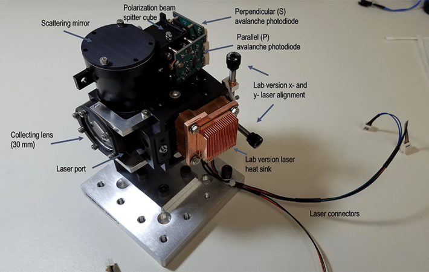
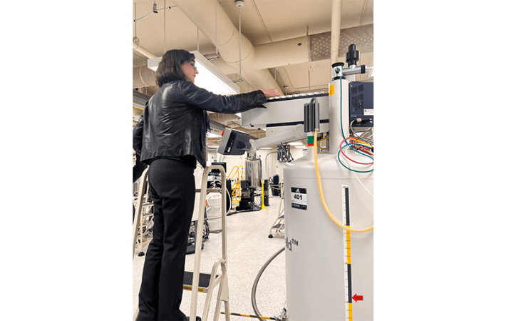
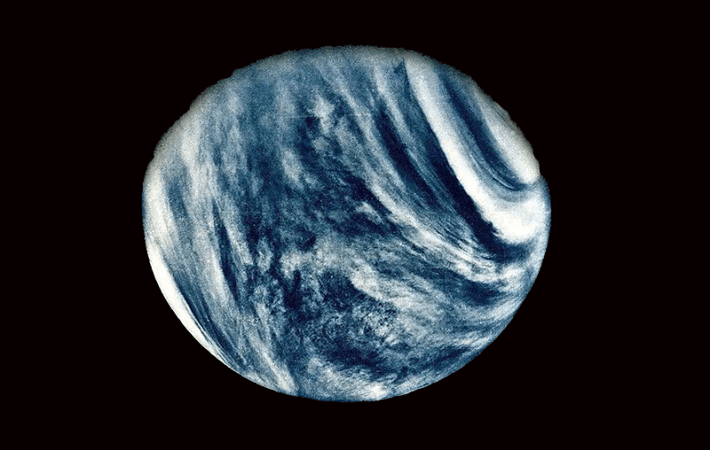

The planet Venus is a hellish world. Not only is this enigmatic, boiling globe holding tight to its secrets under thick clouds saturated with sulfuric acid, it harbors a biological question mark in those very clouds: Could Venus’s atmosphere be a haven for high-altitude life?
Venus is often called Earth’s sister planet, and it might also host a biota all its own. While the planet’s torrid surface seemingly rules out life, there is a possibility that microbes could live in the more temperate environment offered within the clouds of Venus, a hypothesis put forth by astronomer Carl Sagan in 1967.
That prospect is propelling the first private mission to Venus, an endeavor outfitted with high-tech instrumentation designed to search for signs of life in its clouds by detecting organic chemistry.
Sara Seager, a professor of planetary sciences at the Massachusetts Institute of Technology (MIT) is the principal investigator for the series of Morning Star missions to Venus. The first is the Rocket Lab Mission to Venus, which will deploy a small, nose cone-like probe crafted to sample the Venusian atmosphere using something called an autofluorescence nephelometer. That instrument can measure individual particles in Venusian clouds, detailing their size, shape, and composition in a search for signs of organic molecules.
The venus probe is now resting in the Long Beach, California, headquarters of Rocket Lab, an entreprenurial space launch firm that’s providing the launch vehicle, the cruise vehicle, and the probe for the mission with Seager’s team’s instrument. In a launch that is planned for 2026, a Rocket Lab booster will hurl the Rocket Lab exploratory craft to Venus to begin the first largely privately funded investigation of that planet.
After it reaches Venus, the 37-pound probe, which measures just 16 inches across, will plunge into the planet’s wild and wicked atmosphere for roughly five minutes. During its descent it will scan for evidence of organic molecules within the cloud layers that hover from 28 to 37 miles above Venus’s 854-degrees-Fahrenheit surface.
“It’s worth going to look more closely for signs of life.”
Inside the probe is a spherical pressure vessel that maintains a temperature suitable for its onboard electronics and instrumentation. Information on what the probe finds during its searing freefall will be transmitted directly back to Earth by a small antenna. To protect the probe from the high temperatures of Venus, engineers at NASA’s Ames Research Center in California’s Silicon Valley designed and built its Heatshield for Extreme Entry Environment Technology (HEEET). This shield is made of a woven material fabricated to withstand temperatures up to 4,500 degrees Fahrenheit as the probe navigates the extreme friction generated by piercing Venus’s atmosphere at high speed.
Funding for the Morning Star mission to Venus, specifically the scientific equipment and research support for the investigation, was provided by Schmidt Sciences.
Schmidt Sciences knew there was something appealing about one of Earth’s nearest neighbors, Seager says. “Even if there’s no life on Venus, that’s fine. It would be dumb of us not to try. We know there’s interesting chemistry that we don’t understand. So either way, it’s a win to go back to Venus.”
The lead of astrophysics and space at Schmidt Sciences is Arpita Roy, a former tenure-track astronomer in NASA’s Space Telescope Science Institute and a dedicated specialist in habitable zones and exoplanet discovery.
For Roy, Seager’s proposal for funding the exploratory trip to Venus was ideal as “it fit into our parameter space of interest.” The mission would be relatively fast, and it didn’t require any fancy new technology to collect unique data, as the autofluorescence nephelometer makes use of off-the-shelf instrumentation, she explains.

EYE IN THE SKY:The Morning Star missions depend on the data that will be collected using an autofluorescence nephelometer (AFN). The AFN, shown here, can measure individual particles, collecting information about their size, shape, and composition. Credit: Ted Fisher and Darrel Baumgardner, Cloud Measurement Solutions.
“We liked how plucky and still brave it was, this return of in situ Venus measurements after so many years,” Roy says.
The first successful flyby of Venus was completed by NASA’s Mariner 2 spacecraft, which buzzed past the planet in 1962. Other spacecraft dedicated to purging Venus of its secrets were flown and funded by the United States, the former Soviet Union, and Europe, with Japan launching the most recent mission built to specifically survey Venus in 2010.
The other thing that Roy says is very cool about the new mission to Venus is sorting out which data, during the probe’s five-minute plunge, is exciting and convincing enough to merit going back, perhaps over and over again.
Most people view Venus as a scorching-hot hellscape, a planet ravaged by a runaway greenhouse effect. However, this second rock from the sun is receiving more and more attention these days as a potential abode for alien life.
For instance, in September 2020, researchers at MIT and Wales’ Cardiff University announced that they had spotted phosphine in Venus’ atmosphere by way of ground-based observations. The published finding was a magnet for attention because, here on Earth, phosphine is typically produced by living organisms. But the Venus phosphine claim remains in question, is contested by some researchers, and demands further investigation.

FEARLESS LEADER:Sara Seager, seen here working in the lab, is the principal investigator for the Morning Star series of missions to Venus. “The fact that Venus is kind of a living, breathing planet is pretty compelling,” she says. Credit: Laroslav Lakubivskyi.
MIT researchers have also suggested the presence of an unknown chemical in the high-altitude clouds of Venus, one that absorbs more than half of all ultraviolet radiation buffeting the planet from the sun. Researchers have puzzled over the identity of this UV absorber for more than 30 years, with some scientists suggesting that the compound could be a photosynthetic pigment produced by Venusian cloud-based life.
More recent news from Venus is highlighted by Seager. “Now researchers are more sure that there is volcanic activity,” she says. Because volcanoes help regulate a planet’s atmosphere by cycling gasses, such as carbon dioxide, and their associated tectonic activity shuttles crucial chemicals from interior to atmosphere, planets with volcanic activity are typically considered good candidates for hosting life. “So the fact that Venus is kind of a living, breathing planet is pretty compelling,” Seager adds.
The Morning Star Mission features an autofluorescence nephelometer, or AFN in space shorthand, a device that will hopefully help untangle some of these chemical mysteries. That instrument will shine a laser through a tiny, sapphire window. The laser light will scatter off particles floating in Venus’s clouds and bounce back to the AFN, which will measure the backscattered light.
Seager says that mission researchers tuned the wavelength of the laser light produced by the AFN to illuminate organic molecules that emanate from biological entities. “It can confirm the cloud particle size distribution and what the cloud particles might be made of,” she notes. “Pure sulfuric acid will not show fluorescence. Autofluorescence is the natural fluorescence of biological structures. If we actually see fluorescence, it won’t tell us what organic particles are there,” she adds, “but it will indicate there are organic particles.”
Did conditions on the planet short-circuit attempts at microbial life in the past?
Seager and colleagues reported in a 2023 Proceedings of the National Academy of Sciences paper the results of lab experiments that showed nucleic acid bases, key molecules needed for life, are stable in concentrated sulfuric acid. “The stability of nucleic acid bases in concentrated sulfuric acid advances the idea that chemistry to support life may exist in the Venus cloud particle environment,” Seager and colleagues concluded.
So could such an aggressive solvent in the hazy clouds of Venus be a friendly environment for alien biochemistry? “Our finding,” Seager says, is the most convincing piece of evidence that suggests “it’s worth going to look more closely for signs of life.”
NASA’s last dedicated mission to Venus was the Magellan orbiter released from a space shuttle in 1989. It imaged the entire surface of Venus with its cloud-cutting radar system, teasing out a slew of findings, such as evidence of volcanism, lava channels, pancake-shaped domes, and turbulent surface winds.
While there are multiple missions to Venus now on the books, whether current NASA budgetary woes translate into building, launching, and flying them is uncertain at best.
Here’s the newly imperiled U.S. government-supported manifest. There’s the planned 2031 launch of the NASA Venus orbiter, VERITAS (Venus Emissivity, Radio science, InSAR, Topography, And Spectroscopy). Work has also been underway on NASA’s DAVINCI (Deep Atmosphere Venus Investigation of Noble gases, Chemistry, and Imaging). This bold mission features a descent probe slated to plunge through the planet’s clouds down to its surface. Projected to launch in the early 2030s, DAVINCI would be the first NASA mission to visit the Venusian atmosphere since 1984.
In addition to NASA’s solo Venus ambitions, the European Space Agency plans to launch the Envision spacecraft in November 2031. It would study Venus from its inner core to its outer atmosphere. The Envision mission is a partnership with NASA, with the U.S. space agency providing a cloud-cutting Venus Synthetic Aperture Radar (VenSAR).
Enter the Morning Star missions to Venus. This private effort is exciting for two reasons, says Paul Byrne, an associate professor of Earth, environmental, and planetary sciences at Washington University in St. Louis, Missouri.
For one, the idea that Venusian clouds might be habitable is a tantalizing one, since Venus isn’t the first place we think of when the word “habitability” is mentioned, Byrne says. But the skies above Venus represent the only other environment in our solar system where temperatures and pressures approach those that exist at Earth’s surface.
“There are challenges to life there, including high ultraviolet radiation, very little water, and the possibility that any nutrient supply there might be extremely limited,” says Byrne. “But that’s the point of this mission—to see just what’s there.”

LIFE IN THE CLOUDS?Though the surface of Venus is boiling hot, conditions in the persistent layer of swirling clouds could be just right to host life. Credit: NASA/JPL-Caltech/USGS.
Byrne adds that the idea of scientists partnering with industry to carry out the first private interplanetary mission sends a very encouraging signal that this model of exploration is worth pursuing. Indeed, that signal comes at a time when both commercial activities for the moon are ramping up and NASA’s science budget is facing an existential threat, he notes.
While the private Morning Star mission is a short-lived jaunt into Venus’s atmosphere, Byrne’s view is that it might be enough to answer a fairly profound question: Is there life there? And efforts such as these are even more important in light of the recent drastic cuts to NASA.
“It is worth bearing in mind that Venus is a criminally underexplored place, and just as NASA started to get momentum building for a return to the second planet those plans look to be facing the axe,” Byrne cautions. Because the projected renaissance in Venus exploration blueprinted by NASA may not materialize, he says, the Morning Star approach mission “is a welcome step in getting to know our nearest planetary neighbor—and the only Earth-size world we will ever visit—a little better.”
James Garvin, chief scientist at NASA’s Goddard Space Flight Center and principal investigator of NASA’s DAVINCI mission, agrees that the time is right to explore Venus’ secrets more carefully. Another bold question researchers can ask about Venus is how a planet may have lost its habitability, he says. Did conditions on the planet short-circuit attempts at microbial life in the past? Or maybe Venusian lifeforms found a way via chemical refugia in the atmosphere to preserve aspects of what once was.
“Perhaps Venus offers a perspective on this key ingredient in our home planet as a life-infested world by allowing us to see other evolutionary pathways,” adds Garvin. “My hope is that the world space exploration community considers the incredible possibilities presented by Venus as a relevant piece of an emergent exploration agenda.”
Could the hazy clouds of Venus be a friendly environment for alien biochemistry?
In Garvin’s view, Venus is a natural laboratory waiting for scientists to fully explore its multi-layered but intriguing atmosphere as its deepest parts lie unexplored, much like Earth’s deep sea.
Venus, he says, is “deeply mysterious and awaiting explorers to read its chemical fingerprints and interactions to learn how to explore on the edge with new capabilities that offer benefits here on Earth and beyond. I can promise you; Venus will not disappoint!”
According to Richard French, Rocket Lab’s director of space systems business development and strategy, the Venus mission is an example of what is now possible. “Even with the mass and data rate constraints and the limited time in the Venus atmosphere, breakthrough science is possible,” he explains.
The mission to Venus is clearly an ambitious venture, but with a clear hypothesis: There is no life without organic chemistry. Saluting the science team behind the mission, French says he believes that any detection of organic chemistry makes the presence of life more likely.
The success of the mission is dependent on details relayed back to Earth from the probe’s dip into the Venusian atmosphere. But finding some intriguing trace of organic molecules is just the beginning. The team will also face the challenge of relaying such insights to the general public.
MIT’s Seager reports that the Venus-bound probe is now being prepped for sendoff and has been delivered to Rocket Lab’s facilities in Long Beach.
“Think about it. We haven’t visited the atmosphere of Venus with modern instrumentation. It has been decades … and we see all this mysterious chemistry there,” says Seager. “The first mission will definitely confirm, refute some existing knowledge, and find some new things.”
Seager, already busy at work plotting a follow-up Venus investigation, acknowledges that the maiden voyage of the Morning Star series of missions to Venus is not going to be a slam dunk given that it represents a modest scientific trip to the planet for cloud data.
But the mission will be a resounding success if probing the planet’s clouds reveals definitively that there’s complex organic chemistry happening in the cloud particles, Seager says. “It will be a game changer to show that for real, not just in the lab or in our minds.” 
Lead image: NASA/JPL-Caltech/USGS
This article was updated to include additional information.
Källförteckning
- Originalartikel: https://nautil.us/seeking-signs-of-life-on-venus-1238038/